메신저로 소통하나요?
개인 휴대폰에만 남습니다
Zaemit×WEVEN
사용자 가치에서 시작하는 AI 전환
김정환 · 주식회사 위븐 대표 · 2026.09
PART 01
발표자를 먼저 소개해 드리겠습니다

AGENDA
PART 02
정보화에서 지능화로 무엇이 달라졌는지 살펴보겠습니다
원의 크기는 생산성이 커지는 방향을 나타낸 개념도입니다. 실측 수치가 아닙니다.
※ Source: 포드 수치는 하이랜드파크 이동 조립라인 도입 전후(1913~1914) 비교, 포드 모터 컴퍼니 생산 기록 · GitHub Copilot 통제 실험(2022, 개발 과제 55.8% 단축) · Noy & Zhang, Science(2023, 글쓰기 과제 40% 단축) · 기간은 통상적 구분이며 학자마다 차이가 있습니다
※ Source: 로이터 보도, 2023년 2월 (UBS 추정치)
※ 2026년 이후는 전망입니다.
PART 03
쓰는 법이 바뀌면 일하는 법도 바뀝니다
3. 살아남기 - 02
잠시 다섯 단계 중 자신의 자리를 짚어 보시기 바랍니다.
(개념도) 단계는 앞 장의 다섯 단계입니다.
완성도보다 반복 횟수가 결과를 정합니다. 하루에 세 번 고치면 일주일 뒤에는 남이 못 만드는 도구가 됩니다.
맡기는 범위가 넓어지는 순서 (개념도)
주황색 단계는 사람이 반드시 개입하는 지점입니다
※ 비율은 예시(개념도)이며 업무 유형에 따라 달라집니다.
PART 04
AI 전환은 일하는 방식을 바꾸는 일입니다
데이터를 의사결정에 쓰고 수익 모델까지 바뀌어야 디지털 전환이고, 그 전까지는 아직 디지털화입니다.
정부24, 홈택스처럼 전 국민이 쓰는 전자정부 서비스가 정부 데이터 전환의 결과입니다.
※ 도구 이름은 예시이며, 같은 역할을 하는 다른 도구로 바꿔도 됩니다.
네 단계를 지나야 '쓸 수 있는 데이터'가 됩니다. (개념도)
4. AX - 05
실패한 사례와 성공한 사례를 나란히 놓고 출발점의 차이를 보겠습니다.

두 사례의 공통점은 출발점인데, 사용자의 문제 대신 도입 실적에서 시작했습니다.
두 사례 모두 사용자의 고통에서 출발했고, 기술 자랑은 뒤로 미뤘습니다.


"옷 고를 때 피곤해하네", "돈이 없어 법적 보호를 못 받네"에서 출발했습니다.
"사람들이 옷 고를 때 피곤해하네", "돈이 없어서 법적 보호를 못 받네" 같은 고통이 출발점이었습니다.
데이터 전환은 기업 AX의 선행 조건입니다. 기반이 없으면 개인 업무의 자동화는 되지만 공유를 할 수가 없습니다.
PART 05
왜 어렵고, 무엇을 하면 되는지 짚어 보겠습니다
(개념도) 면적은 자동화가 미치는 범위를 나타냅니다.
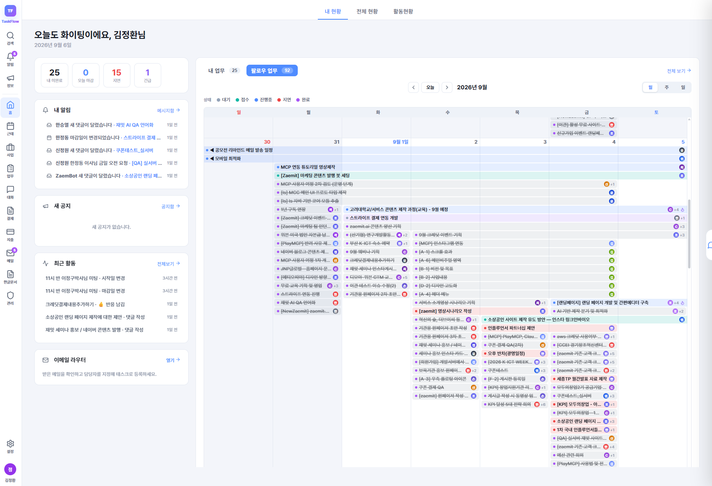
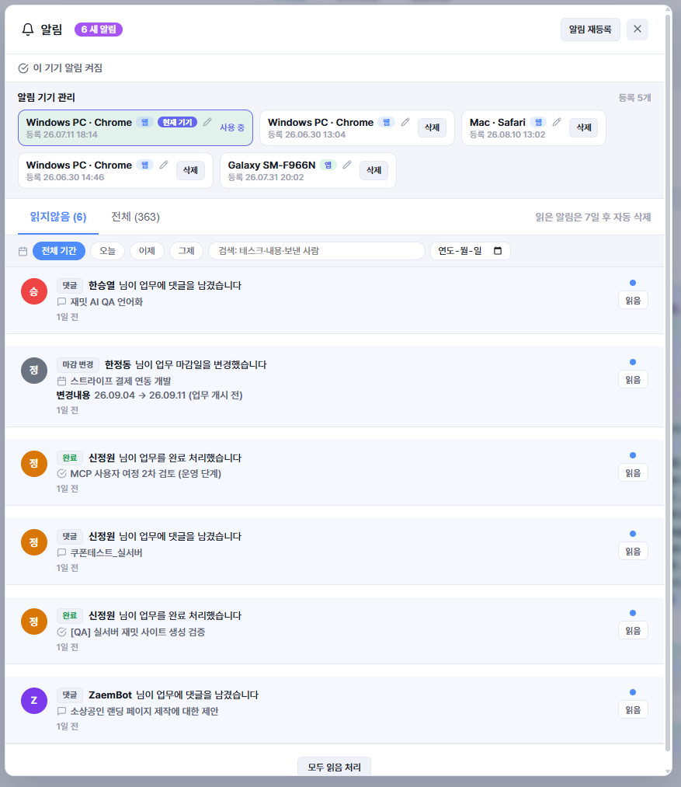
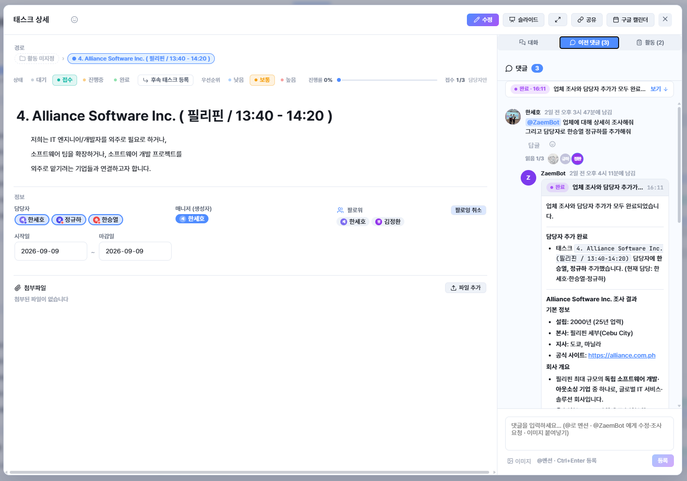
PART 06
직접 쓰면서 알게 된 것을 말씀드리겠습니다
Zaemit×WEVEN
전문가 수준의 디자인 · 개발 · 데이터를 AI에게 제공하는 Zaemit
CEO 김정환 · 010.8447.4567 · kjh@weven.kr
linkedin.com/in/james-kim-842238168
10년 이상의 웹에이전시 운영 노하우가 시스템에 들어 있습니다.
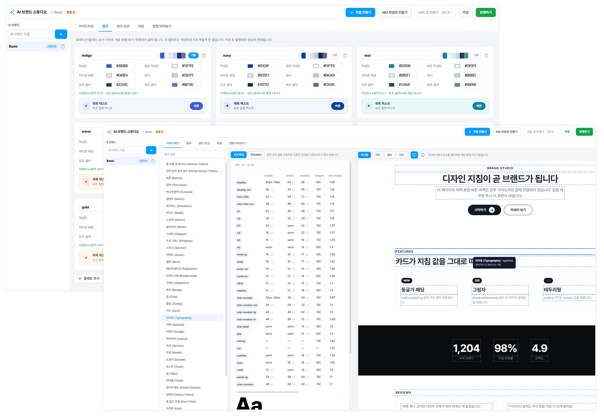
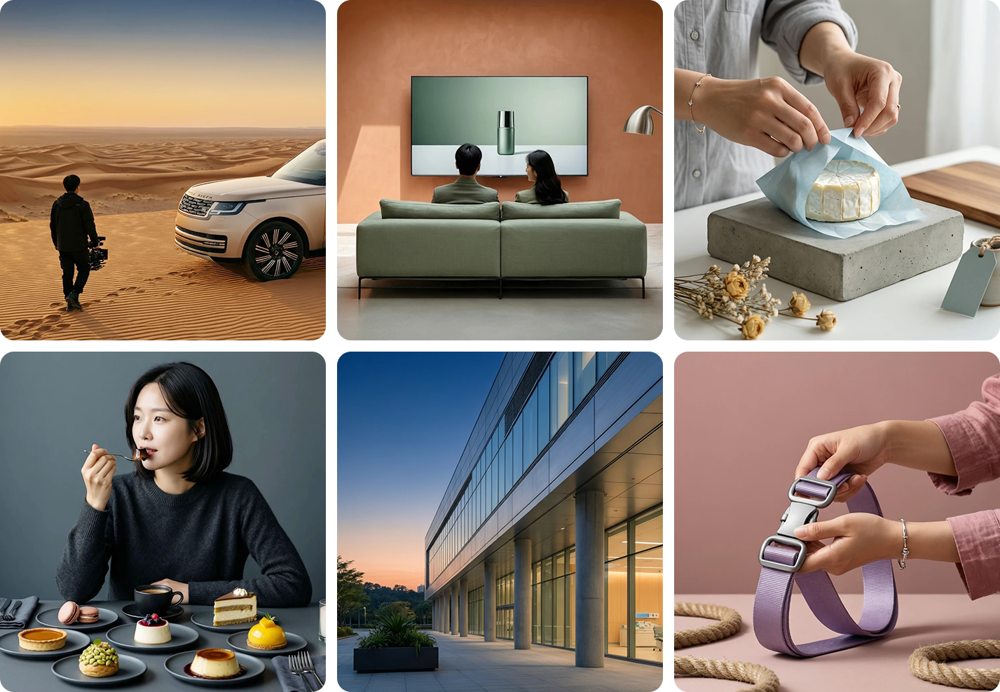
동양인 이미지 표현 문제를 해결한 자체 모델을 포함합니다.
사이트별 DB 격리
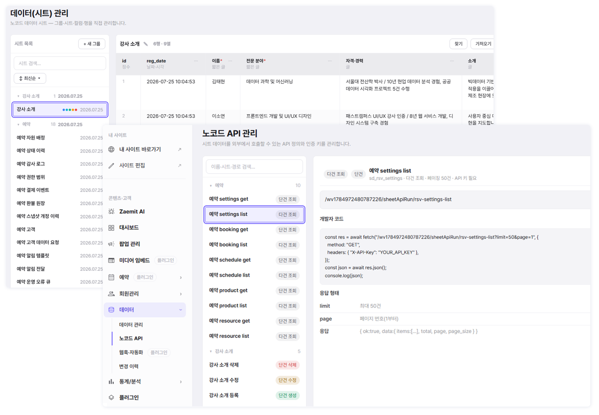

제작 시 SEO · AEO · GEO 최적화와 구글 · 네이버 검색엔진 등록까지 자동으로 안내합니다
※ 클라우드 인프라: MS Azure · Phase 01~03은 2026년 4월 출시 완료, Phase 04는 2026년 9월 출시 예정


이 사이트를 카페에서 메뉴, 예약, 쿠폰 발급이 제공되는 서비스 홈페이지로 만들어줘. 홈, 주문, 쿠폰 페이지만 제공하고, 관리자는 메뉴관리, 쿠폰관리, 사용자 관리를 제공해줘.
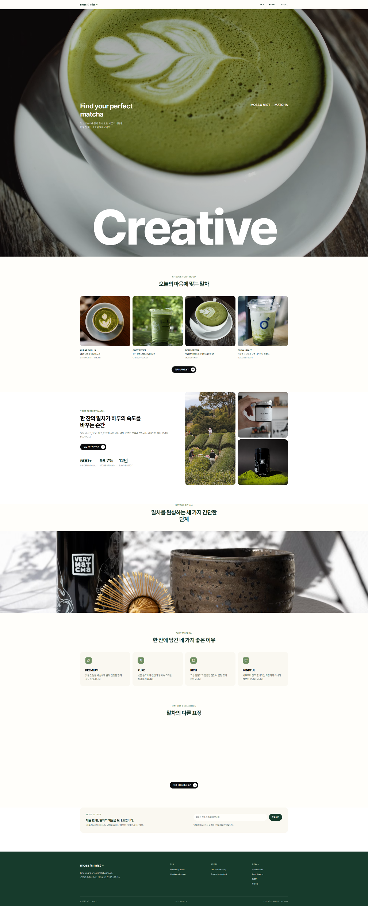
| 단계 | 우리가 한 일 | 결과 |
|---|---|---|
| 1질문합니다 | 개발하면서 모르는 부분을 물었습니다 | 30% 생산성 증가 |
| 2맡깁니다 | 특정 영역의 개발을 요청했습니다 | 2~3배 개발 생산성 증가 |
| 3만듭니다 | 우리 서비스부터 바이브코딩으로 만들었습니다 | 8년 걸릴 서비스를 3개월에 오픈 |
| 4협업합니다 | 협업 방식을 AI 친화적으로 바꿨습니다 | 20명이 하던 개발을 3명이 완료 |
| 5자동화합니다 | 자동화가 이렇게 빨리 될지 몰랐습니다 | 회사 전체 생산성 3배 이상 증가 |
※ Source: 위븐 내부 추산, 2026 기준 · 배수는 같은 인원이 같은 기간에 처리한 개발 범위를 비교한 값입니다
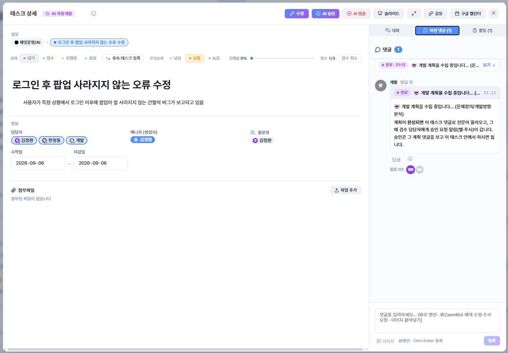
※ 보안 설정도 함께 적용됩니다.
AX의 다음 단계는 자동화를 조직 밖으로 내보내는 것입니다.
PART 07
준비물부터 80점 이후의 방법까지 말씀드리겠습니다
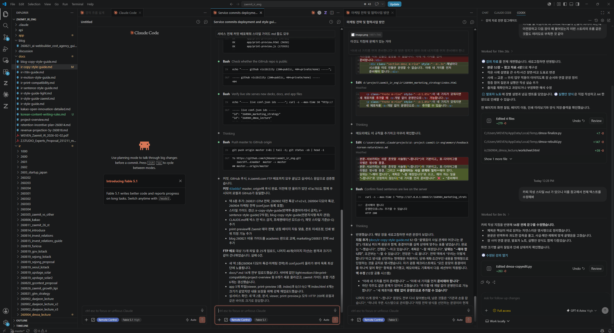
화면: VS Code에서 Claude Code를 실행한 모습
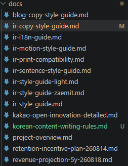
AI가 만든 지침 폴더
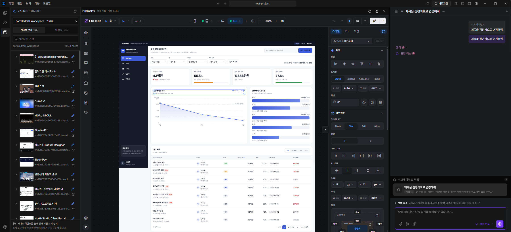
PART 08
새로운 인재상의 정의, 그리고 신입보다 경력직이 필요한 이유
'머리가 좋다'의 기준이 바뀌어서, 답을 빨리 내는 사람보다 무엇을 물어볼지 정하는 사람이 결과를 만듭니다.
AI가 실행을 맡는 동안 사람은 판단을 맡아야 하고, 실행을 붙들고 있으면 AI와 경쟁하게 됩니다.

PART 09
경영학박사가 풀스택이 되기까지
9. 준비된 AI 전문가 - 01
경영학을 전공했지만 AI 모델 개발과 서비스 개발을 직접 해 봤고,
그 과정에서 느낀 점을 정리했습니다.
※ 대표가 직접 파인튜닝하며 겪은 수치이며, 모델 크기와 데이터 종류에 따라 다릅니다.
이것이 제가 직접 겪은 진정한 AI 전환입니다.
예전에는 사람들이 저를 보고 궁금한 것을 바로 실행하는 실행력과 지능을 모두 갖췄다며 대단하다고 했습니다.
9. 준비된 AI 전문가 - 07
궁금한 것을 바로 만들어 보는 실행은 AI가 맡아 주기 때문에, 남은 일은 무엇을 만들지 정하고 결과를 판단하는 것뿐입니다.
Zaemit×WEVEN
AI 전환은 기술 도입이 아닌 일하는 방식을 바꾸는 일이고, 출발점은 사용자의 니즈(페인포인트)입니다
CEO 김정환 · 010.8447.4567 · kjh@weven.kr · zaemit.ai